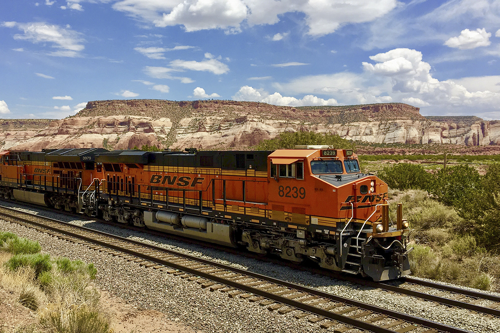
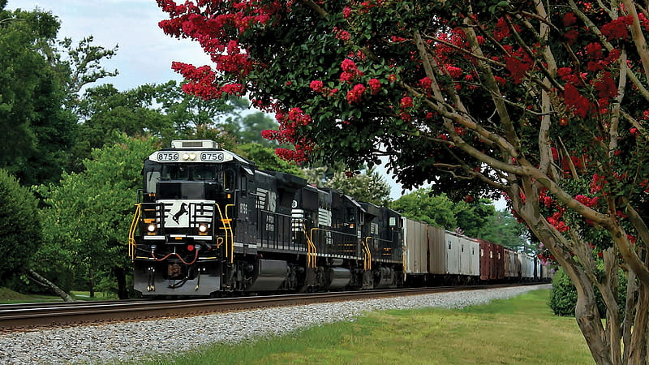
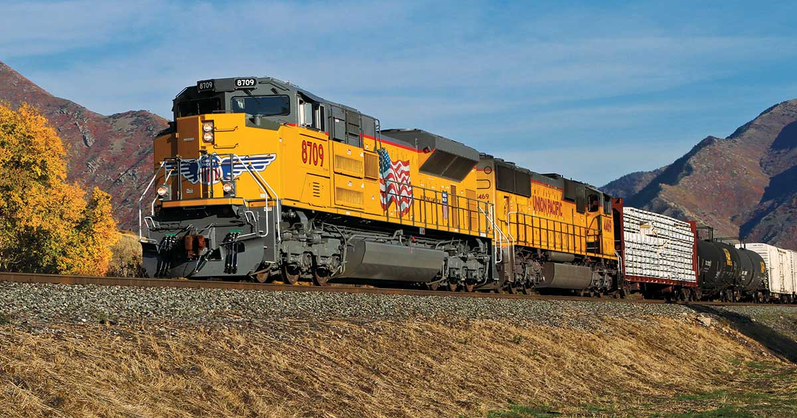
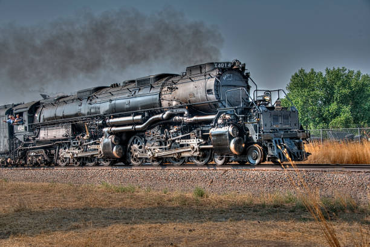

Class 1 - brings in most revenue
BNSF – BNSF Railway Company
BNSF is the nation's largest Class 1 railroad. Their tracks cover most of the Midwest All the way to the West coast.
NS – Norfolk Southern Railway Company
Norfolk Southern will always be in my heart as a Southern gal myself. This company is known for their “heritage” locomotive and they are also known as the “Thoroughbred” line because of their promise for “fast and reliable” service.
UP – Union Pacific Railroad
 Known for their most famous train, the “Big Boy.” This locomotive last ran in 1960, but has been restored in 2019. Union Pacific now holds the largest and heaviest locomotive in the world!
Class 3 - short-line railroads that bring in
Amtrak
 Missouri River Runner is a famous passenger line that allows
transportation between Kansas City MO and St Louis Mo via rail. Amtrak is the nations only Class 1 passenger rail line and does not “own” any tracks but utilizes ansystem known as “host roads.” Sometimes smaller companies, or lines that are provided by the Government will borrow track time from larger groups. Amtrak in St. Louis utilizes BNSF’s tracks often as they have a large operation in South City. The river runner was
awarded its name in 2009 from a random person in Boone Terre Missouri - Thanks Keith!
Missouri River Runner is a famous passenger line that allows
transportation between Kansas City MO and St Louis Mo via rail. Amtrak is the nations only Class 1 passenger rail line and does not “own” any tracks but utilizes ansystem known as “host roads.” Sometimes smaller companies, or lines that are provided by the Government will borrow track time from larger groups. Amtrak in St. Louis utilizes BNSF’s tracks often as they have a large operation in South City. The river runner was
awarded its name in 2009 from a random person in Boone Terre Missouri - Thanks Keith!
Light rail
MetroLink
 The St. Louis Metrolink is ok. Two lines. 38 stops.
It is one of the larger light rails in the Midwest but American light rails are meh
The St. Louis Metrolink is ok. Two lines. 38 stops.
It is one of the larger light rails in the Midwest but American light rails are meh
and here is a picture of Big Boy!
 I have always wanted to catch the 4014 Big Boy locomotive in action! I enjoy the support that BNSF also offers railfans with this restored project.